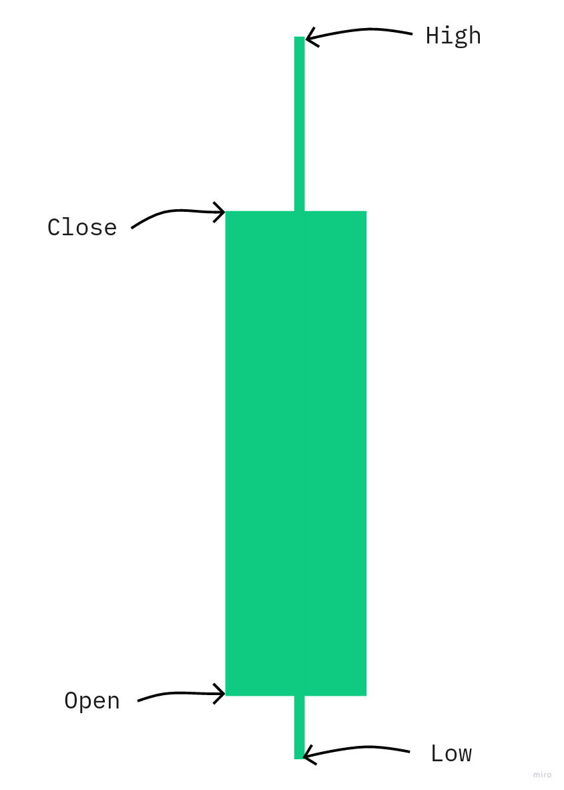
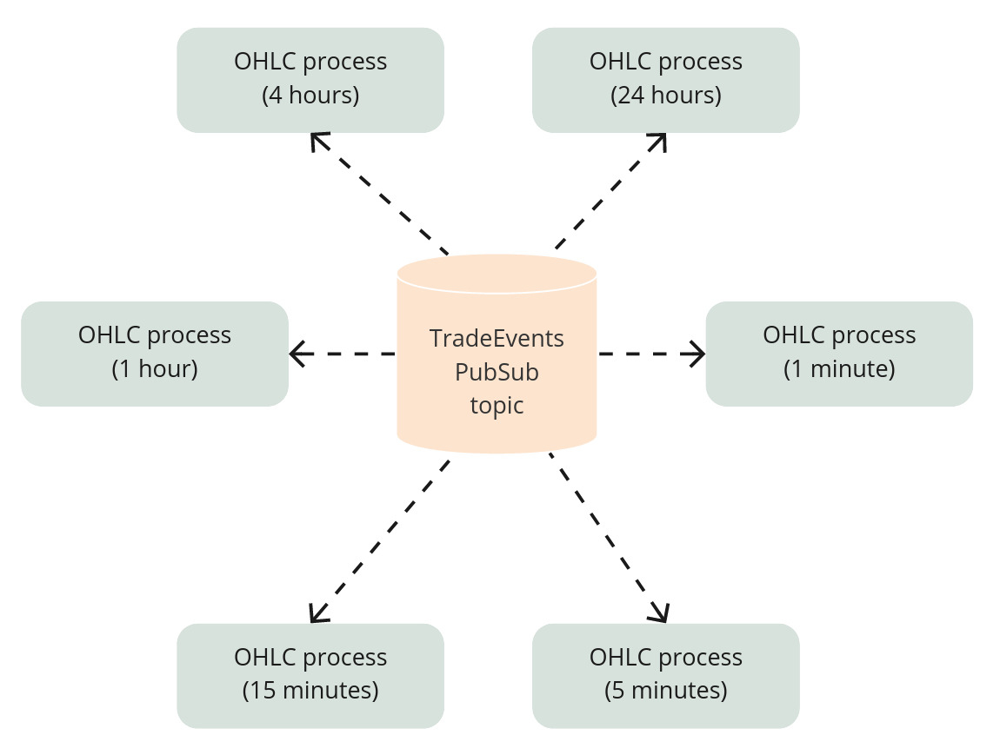

Chapter 18 Idiomatic OTP
We’ve separated pure logic from side effects, turning our trading strategy into
testable decision-making functions. The Naive.Strategy module now handles the “what” -
calculating prices, determining actions. The Naive.Trader handles the “how” -
calling APIs, broadcasting messages, managing state.
But here’s the thing: we’ve been throwing processes at problems without asking whether we actually need them. Every symbol has six OHLC workers, one for each timeframe. Each trader spawns its own process. We have leaders, symbol supervisors, dynamic supervisors - our supervision tree looks like a small forest.
Are we using all these processes for concurrency? For fault isolation? Or are we just using them because we can?
In this chapter, we’ll build an OHLC (open-high-low-close) indicator two different ways. The first way: spawn six GenServer processes per symbol, each tracking a different timeframe. The second way: one process per symbol, handling all timeframes with pure functions.
We’ll discover that processes are powerful, but they’re not free. Each one adds supervision complexity, PubSub subscriptions, and message passing overhead. Sometimes the simplest solution is just fewer processes and more pure functions.
Along the way, we’ll establish a rule of thumb: use processes for concurrency and fault isolation, not for code organization. Elixir gives us processes cheaply, but that doesn’t mean we should use them everywhere.
18.2 The concept
In this chapter, we will look into building an OHLC(open-high-low-close) indicator. We will discuss different potential implementations, which will give us an excellent example to understand the idiomatic usage of the OTP framework.
The OHLC indicator consists of four prices that could be used to draw a candle on the chart:

The OHLC indicators get created by collecting the first price (the “open” price), lowest price(the “low” price), highest price(the “high” price), and the last price(the “close” price) within a specific timeframe like 1 minute.
Our code will need to be able to generate those for multiple timeframes at once - 1m, 5m, 15m, 1h, 4h and 24h.
18.3 Initial implementation
What we could do is to have multiple GenServer processes subscribed to the trade events topic in the PubSub where each one would update their own OHLC numbers:

Let’s start by creating a new application inside our umbrella called “indicator”(run below inside terminal):
We can now create a new directory called “ohlc” inside the “/apps/indicator/lib/indicator” directory, where we will create the GenServer “worker.ex” file:
# /apps/indicator/lib/indicator/ohlc/worker.ex
defmodule Indicator.Ohlc.Worker do
use GenServer
def start_link({symbol, duration}) do
GenServer.start_link(__MODULE__, {symbol, duration})
end
def init({symbol, duration}) do
{:ok, {symbol, duration}}
end
endAs each worker will need to subscribe to the PubSub’s "TRADE_EVENTS:#{symbol}" topic, we can update the init/1 function to do that:
# /apps/indicator/lib/indicator/ohlc/worker.ex
# add those at the top of the worker module
require Logger
@logger Application.compile_env(:core, :logger)
@pubsub_client Application.compile_env(:core, :pubsub_client)
...
# updated `init/1` function
def init({symbol, duration}) do
symbol = String.upcase(symbol)
@logger.info("Initializing a new OHLC worker(#{duration} minutes) for #{symbol}")
@pubsub_client.subscribe(
Core.PubSub,
"TRADE_EVENTS:#{symbol}"
)
{:ok, {symbol, duration}}
endFollowing the pattern established by the Naive.Trader,
we use the module’s attributes(with values based on the configuration) instead of hardcoded module names.
Additionally, we’ve used the Core.PubSub and Phoenix.PubSub(indirectly) modules
so we need to add them to the dependencies list of the indicator application:
# /apps/indicator/mix.exs
defp deps do
[
{:core, in_umbrella: true}, # <= added
{:phoenix_pubsub, "~> 2.0"} # <= added
...As we subscribed to the PubSub, we need to provide a callback that will handle the incoming trade events:
# /apps/indicator/lib/indicator/ohlc/worker.ex
# add this at the top
alias Core.Struct.TradeEvent
def handle_info(%TradeEvent{} = trade_event, ohlc) do
{:noreply, Indicator.Ohlc.process(ohlc, trade_event)}
endTo avoid mixing our business logic with the GenServer boilerplate(as discussed in the last chapter),
we will place it in a new module. First, we need to create a new file /apps/indicator/lib/indicator/ohlc.ex and the Indicator.Ohlc module inside it:
The Indicator.Ohlc module will define a struct that the Indicator.Ohlc.Worker will use as a state:
# /apps/indicator/lib/indicator/ohlc.ex
@enforce_keys [
:symbol,
:start_time,
:duration
]
defstruct [
:symbol,
:start_time,
:duration,
:open,
:high,
:low,
:close
]Most of the above are self-descriptive, besides the start_time(a Unix timestamp) and the duration(the timeframe in minutes).
We can now progress to the implementation of the process/2 function, but instead of focusing on it,
we will start from the “deepest”/“bottom” function that it will rely on and work our way up.
As we discussed in the last chapter, we will try to maximize the amount of pure code.
We can imagine that the bottom function will merge the trade event’s data with the current OHLC data. Two things can happen, either:
- trade event’s
trade_timeis within the current OHLC timeframe. Trade event’s price will get merged to the current OHLC - trade event’s
trade_timeis outside the current OHLC timeframe. The current(now old) OHLC will be returned together with a new OHLC based on the trade event’s price
Here’s the implementation:
# /apps/indicator/lib/indicator/ohlc.ex
def merge_price(%__MODULE__{} = ohlc, price, trade_time) do
if within_current_timeframe(ohlc.start_time, ohlc.duration, trade_time) do
{nil, %{ohlc | low: min(ohlc.low, price), high: max(ohlc.high, price), close: price}}
else
{ohlc, generate_ohlc(ohlc.symbol, ohlc.duration, price, trade_time)}
end
endtogether with the within_current_timeframe/3 and generate_ohlc/3 function:
# /apps/indicator/lib/indicator/ohlc.ex
def within_current_timeframe(start_time, duration, trade_time) do
end_time = start_time + duration * 60
trade_time = div(trade_time, 1000)
start_time <= trade_time && trade_time < end_time
end
def generate_ohlc(symbol, duration, price, trade_time) do
start_time = div(div(div(trade_time, 1000), 60), duration) * duration * 60
%__MODULE__{
symbol: symbol,
start_time: start_time,
duration: duration,
open: price,
high: price,
low: price,
close: price
}
end Moving up the call chain, besides merging the trade event’s data into OHLC data,
we need to deal with the initial state of the worker(the {symbol, duration} tuple).
Let’s add a process/2 function with two clauses handling each of those cases:
# /apps/indicator/lib/indicator/ohlc.ex
# add the below line at the top of the module
alias Core.Struct.TradeEvent
def process(%__MODULE__{} = ohlc, %TradeEvent{} = trade_event) do
{old_ohlc, new_ohlc} = merge_price(ohlc, trade_event.price, trade_event.trade_time)
maybe_broadcast(old_ohlc)
new_ohlc
end
def process({symbol, duration}, %TradeEvent{} = trade_event) do
generate_ohlc(symbol, duration, trade_event.price, trade_event.trade_time)
endThe second clause takes care of the initial state of the OHLC worker(happens upon receiving the first trade event - once in the lifetime of the worker process).
The first clause handles all the other trade events.
This order of clauses could appear weird, but it makes a lot of sense as Elixir will try pattern match clauses from the top, and in our case, the first(top) clause will be used for almost all of the calls.
18.3.1 Maybe functions
Let’s get back to the first clause of the process/2 function as it uses another Elixir/Erlang pattern
that we didn’t discuss before - the maybe_do_x functions.
In case of the incoming trade event’s trade_time outside of the current OHLC’s timeframe,
we would like to broadcast the current OHLC and return a new OHLC(based on the trade event’s data).
Otherwise(trade event’s trade_time within the current OHLC), the trade event’s price is merged into the current OHLC, and it’s not broadcasted.
This sounds very similar to the if-else, but it’s most of the time achieved using the pattern matching:
# /apps/indicator/lib/indicator/ohlc.ex
# add below lines at the top of the module
require Logger
@pubsub_client Application.compile_env(:core, :pubsub_client)
defp maybe_broadcast(nil), do: :ok
defp maybe_broadcast(%__MODULE__{} = ohlc) do
Logger.debug("Broadcasting OHLC: #{inspect(ohlc)}")
@pubsub_client.broadcast(
Core.PubSub,
"OHLC:#{ohlc.symbol}",
ohlc
)
endBy using a separate function, we avoided branching using if-else inside the process/2 function.
The idea is not necessarily to avoid if statements but to keep the code at the consistent level of abstraction,
so it’s easier to understand. Inside the process/2 function,
we can understand what’s going on just by reading the function names inside - there’s no “logic”.
Sometimes people advise that “code should be like well written prose” and
maybe_do_x functions are one of the ways to achieve this “nirvana” state.
18.3.2 Testing
At this moment, our code should compile, and we should already be able to test it.
First, let’s change the logging function to info inside apps/indicator/lib/indicator/ohlc.ex to see what OHLC structs got broadcasted:
# /apps/indicator/lib/indicator/ohlc.ex
defp maybe_broadcast(%__MODULE__{} = ohlc) do
Logger.info("Broadcasting OHLC: #{inspect(ohlc)}")
...
endWe can now progress with testing:
$ iex -S mix
iex(1)> Streamer.start_streaming("XRPUSDT")
...
iex(2)> Indicator.Ohlc.Worker.start_link({"XRPUSDT", 1})
{:ok, #PID<0.447.0>}
...
22:45:00.335 [debug] Broadcasting OHLC: %Indicator.Ohlc{close: "0.63880000", duration: 1,
high: "0.63890000", low: "0.63840000", open: "0.63860000", start_time: 1644014640,
symbol: "XRPUSDT"}The above test confirms that we can manually start a single OHLC worker that will aggregate data over a single minute timeframe.
Please remember to revert the change to the logging function back to debug inside the maybe_broadcast/1 in the Indicator.Ohlc.Worker module
back to debug/1.
18.3.3 Supervision
To supervise multiple Indicators.Workers we will use the DynamicSupervisor.
We need to update the Indicators application’s supervision tree to start a dynamic supervisor:
# /apps/indicator/lib/indicator/application.ex
children = [
{DynamicSupervisor, strategy: :one_for_one, name: Indicator.DynamicSupervisor}
]We can now add aggregate_ohlcs/1 function that will start all workers:
# /apps/indicator/lib/indicator.ex
def aggregate_ohlcs(symbol) do
[1, 5, 15, 60, 4 * 60, 24 * 60]
|> Enum.each(
&DynamicSupervisor.start_child(
Indicator.DynamicSupervisor,
{Indicator.Ohlc.Worker, {symbol, &1}}
)
)
endWe can now start multiple OHLC workers just by running a single function:
$ iex -S mix
iex(1)> Streamer.start_streaming("XRPUSDT")
...
iex(2)> Indicator.aggregate_ohlcs("XRPUSDT")
{:ok, #PID<0.447.0>}The above calls will start six OHLC worker processes supervised under the Indicator.DynamicSupervisor process.
We could continue with this exercise, add a Registry to be able to stop the indicators and a database to be able to autostart them. Those improvements would get the “indicators” application in line with the other applications, but that’s not the goal of this chapter.
18.4 Idiomatic solution
What we will focus on is the usage of processes(in our case the GenServers) in our solution. We’ve split our logic between multiple processes, each aggregating a single timeframe. All of those processes work in the same way. They subscribe to the PubSub topic, merge the incoming data into OHLC structs, and potentially broadcast them. The only difference is the timeframe that they use for merging data.
The solution feels very clean, but also we are using multiple processes to aggregate data for each symbol. In a situation like this, we should always ask ourselves:
- do we need that many processes?
- are we using them to achieve parallelism? Is it required?
- could we reorganize our code to use fewer processes?
The main idea is to keep our code as simple as possible and only use processes when it’s absolutely required.
Instead of a single worker being responsible for aggregation within a single timeframe, we could restructure our code to make it responsible for all timeframes of the symbol.
This improvement would:
- make our merging code a little bit complex(it would merge multiple timeframes at once)
- decrease the amount of PubSub subscribers by six (instead of six processes per symbol, we would have just one)
- potentially decrease the amount of broadcasted messages (we could group OHLC structs into a single message)
- allow a single worker to decide what to do with all current OHLCs in case of errors, without need for any additional symbol supervision level(like
one_for_all) - make it impossible to aggregate nor broadcast OHLCS of the same symbol in parallel
We can see that the solution based on processes could get really complex really quickly(multiple processes per symbol, growing supervision tree, multiple subscriptions, multiple messages etc).
Just to be clear - processes do have their place, they are a really powerful tool, but as with every tool, the responsibility lies on us developers to use them wisely - they must not be used for code organization.
Enough theory - let’s look into how we could update our Indicator.Ohlc module to be able to deal with multiple timeframes at once.
Initially, we could be tempted to update the process/2 function:
# /apps/indicator/lib/indicator.ex
def process([_ | _] = ohlcs, %TradeEvent{} = trade_event) do
results =
ohlcs
|> Enum.map(&merge_price(&1, trade_event.price, trade_event.trade_time))
results |> Enum.map(&maybe_broadcast(elem(&1, 0)))
results |> Enum.map(&elem(&1, 1))
end
def process(symbol, %TradeEvent{} = trade_event) do
[1, 5, 15, 60, 4 * 60, 24 * 60]
|> Enum.map(
&generate_ohlc(
symbol,
&1,
trade_event.price,
trade_event.trade_time
)
)
endWe added some logic to both clauses. At this moment, it maybe doesn’t look that bad, but it’s a great place to mix even more logic with dirty code. This is a great example where we should stop and rethink how we could maximize the amount of pure code.
Instead of expanding the process/2 function, we could build on top of the merge_price/3 and
generate_ohlc/4 functions, which deal with a single OHLC data.
We could add plural versions of those functions that will understand that we now deal with multiple OHLC structs:
# /apps/indicator/lib/indicator.ex
def merge_prices(ohlcs, price, trade_time) do
results =
ohlcs
|> Enum.map(&merge_price(&1, price, trade_time))
{
results |> Enum.map(&elem(&1, 0)) |> Enum.filter(& &1),
results |> Enum.map(&elem(&1, 1))
}
end
def generate_ohlcs(symbol, price, trade_time) do
[1, 5, 15, 60, 4 * 60, 24 * 60]
|> Enum.map(
&generate_ohlc(
symbol,
&1,
price,
trade_time
)
)
endNow the process/2 function got back to its almost original shape:
def process([_ | _] = ohlcs, %TradeEvent{} = trade_event) do
{old_ohlcs, new_ohlcs} = merge_prices(ohlcs, trade_event.price, trade_event.trade_time)
old_ohlcs |> Enum.each(&maybe_broadcast/1)
new_ohlcs
end
def process(symbol, %TradeEvent{} = trade_event) do
generate_ohlcs(symbol, trade_event.price, trade_event.trade_time)
endBy introducing the merge_prices/3 and generate_ohlcs/3 functions,
we were able to keep the dirty part of our code small(it grew only to accommodate multiple broadcasts).
The new functions are pure and can be easily tested.
As we modified the interface of the process/2 function (by removing the duration),
we need to update the Indicator.Ohlc.Worker module to be blissfully not aware that we have different durations:
# /apps/indicator/lib/indicator/ohlc/worker.ex
def start_link(symbol) do # <= duration removed
GenServer.start_link(__MODULE__, symbol) # <= duration removed
end
def init(symbol) do # <= duration removed
symbol = String.upcase(symbol)
@logger.debug("Initializing new a OHLC worker for #{symbol}") # <= duration skipped
...
{:ok, symbol} # <= duration removed
endThe final update will be to simplify the Indicator.aggregate_ohlcs/1 function just to start a single OHLC worker:
# /apps/indicator/lib/indicator.ex
def aggregate_ohlcs(symbol) do
DynamicSupervisor.start_child(
Indicator.DynamicSupervisor,
{Indicator.Ohlc.Worker, symbol}
)
endWe can now test our implementation by running the following once again:
$ iex -S mix
iex(1)> Streamer.start_streaming("XRPUSDT")
...
iex(2)> Indicator.Ohlc.Worker.start_link("XRPUSDT")
...
23:23:00.416 [info] Broadcasting OHLC: %Indicator.Ohlc{close: "0.68230000", duration: 1,
high: "0.68330000", low: "0.68130000", open: "0.68160000", start_time: 1644189720,
symbol: "XRPUSDT"}The logged message(s) confirms that our OHLC aggregator logic works as expected using a single process.
18.5 Final thoughts
We’ve just learned when to say “no” to processes. Here’s what we accomplished:
- Built an OHLC indicator that spawns six processes per symbol - straightforward but expensive
- Refactored it to use one process per symbol, handling all timeframes with pure functions
- Kept the
process/2function clean by extracting plural versions of our pure functions - Reduced PubSub subscriptions from six to one per symbol
- Simplified our supervision tree from six workers per symbol to just one
The key insight is that processes aren’t free, even in Elixir. Each process means:
- Another PubSub subscription and message in the queue
- More supervision complexity (six processes that can crash independently)
- More message passing overhead (six broadcasts instead of one)
- No shared state (can’t decide what to do with all timeframes together)
The single-process version trades a bit of merging complexity for massive simplification
everywhere else. And here’s the thing: the merging isn’t even that complex. We created
merge_prices/3 and generate_ohlcs/3 - plural versions of functions we already had.
The pure logic scales naturally.
It’s worth noting the trade-offs of this approach:
- One process handling all timeframes means no parallelism across timeframes - but did we need it? The merging is just min/max comparisons
- More code in the
Indicator.Ohlcmodule - but it’s all pure and easily testable - The
process/2function deals with lists now - but the complexity moved to pure functions, not side effects
The pattern we’ve established appears throughout production Elixir systems. Phoenix channels don’t spawn a process per event type - they handle all event types in one process. Ecto doesn’t spawn a process per query - it pools connections and reuses them.
When Should You Use Processes?
Use processes when you need one of these three things:
- Concurrency - truly parallel work (not our case - sequential price updates)
- Fault isolation - one failure shouldn’t take down others (maybe relevant per symbol, but not per timeframe)
- State isolation - independent lifecycles (each symbol needs this, but not each timeframe)
Don’t use processes for code organization. That’s what modules are for.
A study by Kero van Gelder analyzing Elixir production systems found that the median number of processes in production apps is around 200-500, not 20,000. The apps that worked best kept processes focused on concurrency and state, not structure (source: ElixirConf 2019 - “The Right Tool for the Job”).
So, What’s Next?
The OHLC example was clean and simple - a perfect learning vehicle. But our naive strategy is messier. We have traders, leaders, symbol supervisors, a whole supervision hierarchy. In the next chapter, we’ll apply what we learned here to refactor the naive strategy itself.
We’ll merge multiple trader processes per symbol into one. We’ll eliminate the leader and symbol supervisor entirely. We’ll move the rebuy logic where it belongs - into the pure strategy code. The result will be simpler, easier to test, and easier to reason about.
[Note] Please remember to run mix format to keep things nice and tidy.
The source code for this chapter can be found in the book’s source code repository (branch: chapter_18).